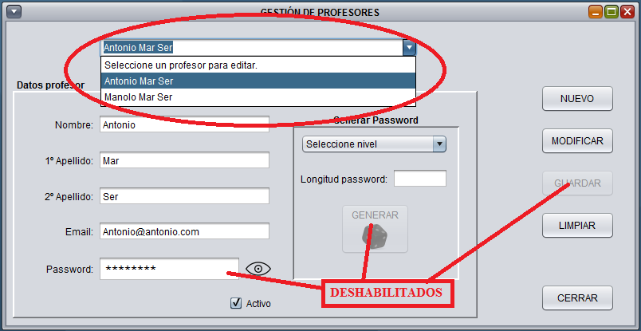
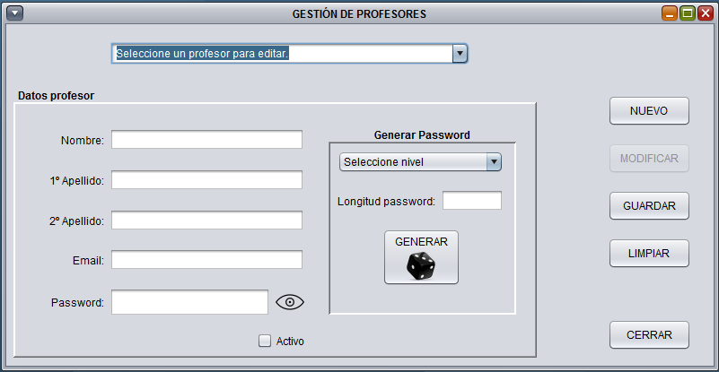

Desde esta ventana, podremos dar de alta un nuevo profesor o editar uno ya existente
Para editar un profesor existente, sólo deberemos seleccionarlo del desplegable y los datos del profesor se cargaran en sus respectivos campos. Al seleccionar editar un profesor, se habilita el botón de modificar y se deshabilita el de guardar. Igualmente se deshabilita la opción de generar un nuevo password. Todos los campos del profesor pueden ser modificados, salvo el password, es por ello que se deshabilita la opción de escribir en éste campo.

Para crear un nuevo profesor, sólo deberemos rellenar los campos del formulario. Como ayuda para crear el profesor, disponemos de un generador de password aleatorios con varios niveles de complejidad
